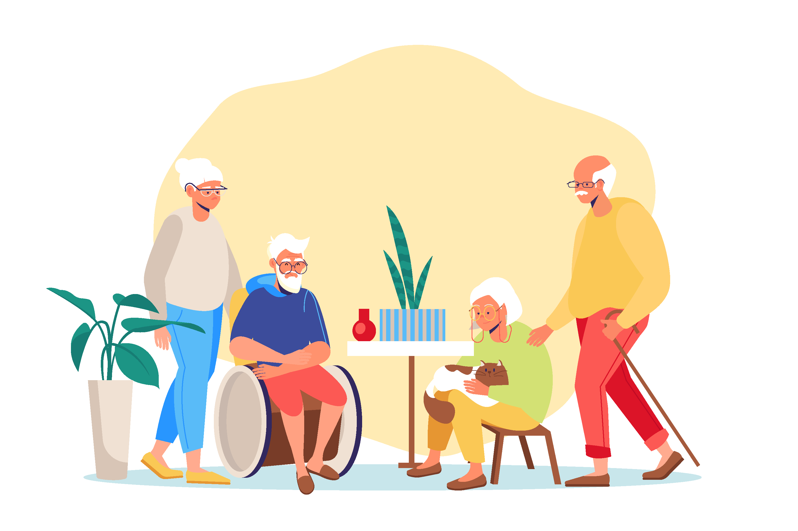
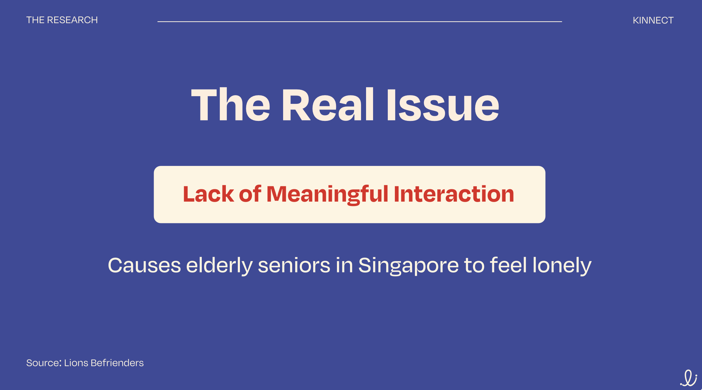

Kinnect
2 Minutes, One Card, Real Connection Social impact · Card game + mobile app · Group Project
01
The problem
39% of Singaporeans aged 62+ report feeling lonely — and 86% of those seniors live with their families. Living together doesn't mean feeling connected: in multigenerational homes, school, work and screens fill the day, and meaningful interaction disappears.
Two surveys confirmed it from both sides. Seniors (63+) wanted more quality time and shared activities. Younger respondents (13–25) wanted the same, and were open to an app to stay close to their grandparents.
Problem statement: despite living with family, many elderly people experience loneliness from limited quality interactions with younger generations. The challenge: building a system flexible enough to be accessible across generations, from youngers to elders.

02
The thinking
Loneliness here isn't a distance problem, it's an attention problem.
The solution couldn't ask for more time — only a lower barrier to starting a conversation: two minutes, one prompt, no planning. And since screens were part of the problem, it couldn't lead with an app.


03
The Solution
Short term — the card game. A physical deck of conversation prompts in four categories to create interest between generations: Today.., What if.., Imagine, Your Generation. It sits on the table, works for every age, needs no onboarding. Sold at pop-up stands outside community centres and libraries around National Grandparents Day.
Long term — the app. A QR code inside the box unlocks a digital extension: challenges, streaks, mini-games and shared progress that turn one good evening into a habit. Accessibility-first, after user testing flagged text and navigation sizing for elderly users.
Awareness → engagement → habit.